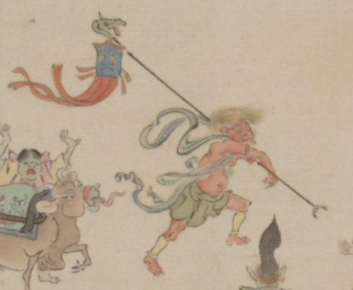

旗をかついだ赤い鬼。鬼は肩衣、腰衣、脚絆をつけて、旗ざおを担いで歩いている。旗ざおの上部は龍の形になっている。
著作者：靖々光一（山本光一）／出典：親書誌：U426_nichibunken_0098：滑稽百鬼夜行絵巻；コッケイヒャッキヤギョウエマキ／日付：2008／資源識別子：U426_nichibunken_0098_0001_0003
Copyright (c)2010- International Research Center for Japanese Studies, Kyoto, Japan. All rights reserved.